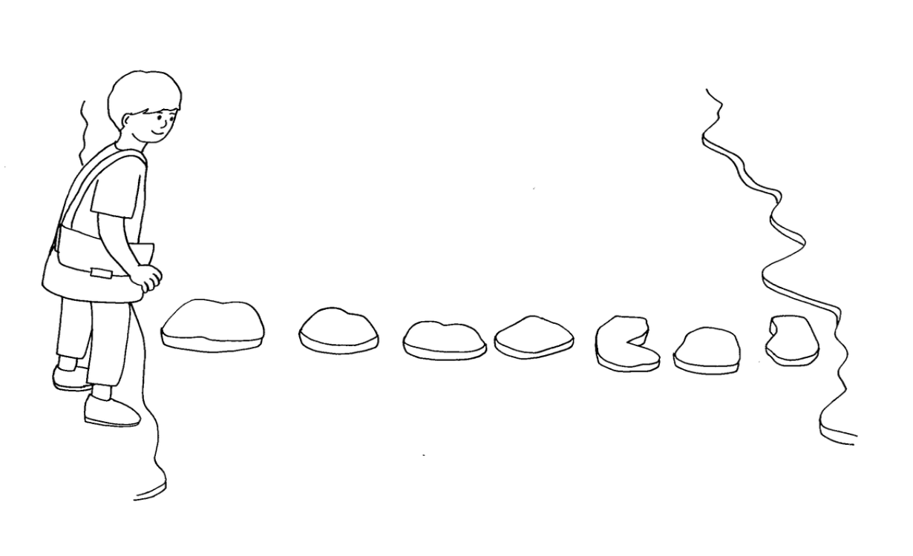

철수는 학교에 가는데 개울을 만났습니다.
개울은 N개의 돌로 다리를 만들어 놓았습니다.
철수는 돌 다리를 건널 때 한 번에 한 칸 또는 두 칸씩 건너뛰면서 돌다리를 건널 수 있습니다.
철수가 개울을 건너는 방법은 몇 가지일까요?

▣ 입력설명
첫째 줄은 돌의 개수인 자연수 N(3≤N≤45)이 주어집니다.
▣ 출력설명
첫 번째 줄에 개울을 건너는 방법의 수를 출력합니다.
▣ 입력예제 1
7
▣ 출력예제 1
34